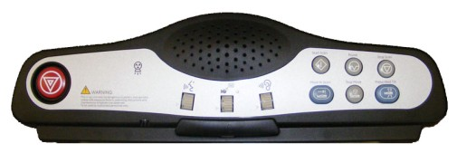
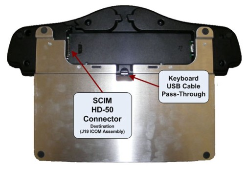

Operating Documentation
Direction 5307452-8EN, Rev# 4
Discovery CT750 HD Service Methods - Adv
Operating Documentation |
| Required Persons | Preliminary Reqs | Procedure | Finalization |
|---|---|---|---|
| 1 |
This procedure describes and illustrates the steps necessary to replace the Scan Control Module (SCIM) Assembly.
| Last revised: | 22 September 2008 |
Illustration 1: Scan Control Module (SCIM) Assembly

| Item | Qty | Effectivity | Part# | Manufacturer | |
|---|---|---|---|---|---|
| Standard FE Toolkit | 1 | - | - | - | |
| Item | Qty | Effectivity | Part# | Manufacturer | |
|---|---|---|---|---|---|
| SCIM | 1 | - | 5316029 | - | |
| FOLLOW ALL REQUIRED SAFETY AND PPE PROCEDURES CUSTOMARY FOR YOUR ORGANIZATION WHEN WORKING ON THIS PRODUCT. | |
| Condition | Reference | Eff |
|---|---|---|
Access to the SCIM is required. Make sure adequate space is available on console table top. | - | - |
Only trained service personnel should service the GE CT Scanner. | - | - |
Select one of the following methods to power off the Operator Console:
If applications are running, click the Shut Down icon and select Shut Down.
If applications are down, open a Unix Shell using the Toolchest. Type: {ctuser@hostname} halt. Press <Enter>.
The Operator Console monitor will display a ‘System Halted’ message when it is acceptable to power off the Operator Console.
Power OFF the Operator Console at the front panel switch. (See Illustration 2.)
Illustration 2: Console Power Switch

Remove the HD-50 cable connection from the back of the SCIM assembly being replaced.
Disconnect the keyboard USB cable from the upper bulkhead panel and pull the keyboard free from the SCIM plate.
| NOTE: | Keyboard is held in place with Velco©. |
Remove the SCIM assembly and set aside.
Place the replacement SCIM assembly on the Operator Console.
Reattach the keyboard to the SCIM plate, remembering to pass the keyboard USB cable through the opening in the SCIM plate.
Reconnect the SCIM HD-50 cable the rear SCIM assembly.
Illustration 3: SCIM Connections

Reconnect the keyboard USB cable at the upper bulkhead panel.
Power ON the Operator Console at the console front panel switch.
Verify the keyboard is functional.
Verify that all controls on the SCIM assembly are mechanically working (i.e. Pushbuttons and Volume controls move freely).
No other verifications required.
Refer to SCIM & ICOM Functional Checks to confirm proper operation.